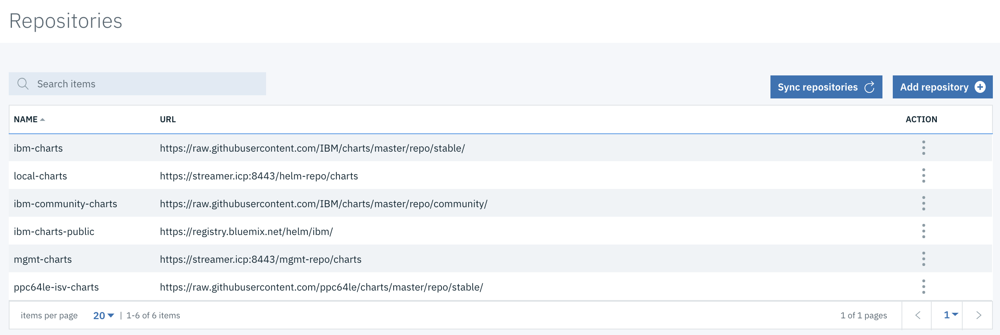

Prepare IBM Cloud Private to run the solution
Install Event Streams on ICP
The installation is documented in the product documentation and in our own note here.
If not done go to the console 'toolbox tab' and download the Event Streams CLI and install it on top of ICP CLI using cloudctl plugin install ./es-plugin. Once installed, the IBM Event Streams CLI is invoked using cloudctl es.
Configure topics and secrets
To access the console, connect to the ICP console and select the deployment named something like: "*-es-ui-deploy" under the streams namespace.
Topics
You can create the topics using the Event Streams console:

or the use a set of commands like below, which are done for you in the script: scripts/createLocalTopicsOnK8S.sh.
# get the name of the Kafka pod
$ kubectl get pods -n streams | grep kafka | awk '{print $1;}'
> rolling-streams-ibm-es-kafka-sts-0
rolling-streams-ibm-es-kafka-sts-1
rolling-streams-ibm-es-kafka-sts-2
# Then get the name of the zookeeper service:
$ kubectl get svc -n streams | grep zoo | awk '{print $1;}' | head -1
rolling-streams-ibm-es-zookeeper-fixed-ip-svc-0
# Then remote exec a shell on one of this broker to configure the topic - for example the "orders" topic
$ kubectl exec -n streams -ti rolling-streams-ibm-es-kafka-sts-0 -- bash -c "/opt/kafka/bin/kafka-topics.sh --create --zookeeper $zooksvc:2181 --replication-factor 1 --partitions 1 --topic orders"
API Key
Define an API key using the Event Stream Console. You can specify keys at the topic and consumer group levels or use a unique key for all topics and all consumer groups. Once you have the API key, define a secret named "eventstreams-apikey" with the command:
$ kubectl create secret generic eventstreams-apikey --from-literal=binding='<api-key>' -n greencompute
$ kubectl describe secrets -n greencompute
This eventstreams-apikey secret will be used in the Helm chart settings and kubernetes deployment descriptor (see this section later in this article).
Private docker registry
When deploying ICP, operators can define a private registry that will be used to host the docker images created. To get the URL goes to the ICP console, then Manage > Helm repositories (e.g. https://streamer.icp:8443/helm-repo/charts).

Namespace
Create a namespace to isolate the application within the solution. (e.g. greencompute)
$ kubectl get namespaces
NAME STATUS AGE
cert-manager Active 42d
default Active 42d
greencompute Active 18d
ibmcom Active 42d
istio-system Active 42d
kube-public Active 42d
kube-system Active 42d
platform Active 42d
services Active 42d
streams Active 42d
Common deployment configuration
The repository name will be different if we deploy on IKS and ICP, also on IKs there is a password and api to access the registry that are persisted in a k8s secret.
When deploying kafka consumer it is important to assess the horizontal pod autoscaler settings and needs, as adding consumers will not address scalability if the number of partitions in the topic(s) to consume does not match the increase of consumers. So disable HPA by default. If you want to use HPA you also need to ensure that a metrics-server is running, then set the number of partition, and the hpa.maxReplicas to the number of partitions.
Generic deployment process
- Login to the IBM Cloud private instance (execute
./scripts/icp-login.sh) - Build or tag the docker image with the cluster name and namespace (e.g.
streamer.icp:8500/greencompute/kc-containerkstreams) - Login to docker registry:
docker login streamer.icp:8500 - Push the image to the repo:
docker push streamer.icp:8500/greencompute/<imagename>:<version> - Deploy the helm release:
helm install <release> --name <releasename> --namespace greencompute --tls
Specific:
- Container microservice - kstreams implementation
helm install icpcontainerkstreams/ --name container-kstreams --namespace greencompute --tls
Resilience
A microservice needs to be resilient to failures and to be able to restart often on another machine for availability. In the case of kafka we address, in this note, the fact that we need anti-affinity rules to get brokers running on different nodes, and be sure to have at least 3 brokers running in parallel. For Zookeepers be sure to have at least 3 instances and co located with a broker.

There are three stateful set defined in the deployed event streams products as illustrated below:
$ kubectl get sts -n streams
NAME DESIRED CURRENT AGE
rolling-streams-ibm-es-elas-ad8d 2 2 40d
rolling-streams-ibm-es-kafka-sts 3 3 40d
rolling-streams-ibm-es-zook-c4c0 3 3 40d
Also a kubectl describe nodes execution will show the clear allocation of kafka pods on the 3 worker nodes"
ExternalID: xxxxxxxx.170
Non-terminated Pods: (11 in total)
Namespace Name CPU Requests CPU Limits Memory Requests Memory Limits
--------- ---- ------------ ---------- --------------- -------------
0 (0%)
streams rolling-streams-ibm-es-kafka-sts-2 1 (12%) 1 (12%) 3548Mi (11%) 3548Mi (11%)
streams rolling-streams-ibm-es-zook-c4c0-2 100m (1%) 100m (1%) 750Mi (2%) 1Gi (3%)
ExternalID: xxxxxxxx.65
Non-terminated Pods: (14 in total)
streams rolling-streams-ibm-es-kafka-sts-1 1 (12%) 1 (12%) 3548Mi (11%) 3548Mi (11%)
streams rolling-streams-ibm-es-zook-c4c0-1 100m (1%) 100m (1%) 750Mi (2%) 1Gi (3%)
ExternalID: xxxxxxx.127
Non-terminated Pods: (14 in total)
streams rolling-streams-ibm-es-kafka-sts-0 1 (12%) 1 (12%) 3548Mi (11%) 3548Mi (11%)
streams rolling-streams-ibm-es-zook-c4c0-0 100m (1%) 100m (1%) 750Mi (2%) 1Gi (3%)
So how to ensure resiliency for consumer and producer? We are addressing in separate the discussions for consumer and producer.
Monitoring
There are two liveness mechanisms in kubernetes, the readiness (is the service ready to receive requests?) and the liveness (is the container running?). In case of readiness failure the service is removed from the available end points, while in case of liveness failure the container is restarted.
In kafka there are others things to consider. For liveness an open port responding should be fine. For readiness we want to verify if the replicas are working, or the borkers are not overloaded, and may be when there is degradation it should not accept more connections. Below is an extract of the statefulset for monitoring the kafka containers:
"containers": [
{
"name": "kafka",
"livenessProbe": {
"httpGet": {
"path": "/liveness",
"port": 7070,
"scheme": "HTTP"
},
"initialDelaySeconds": 360,
"timeoutSeconds": 1,
"periodSeconds": 15,
"successThreshold": 1,
"failureThreshold": 3
},
"readinessProbe": {
"httpGet": {
"path": "/readiness",
"port": 7070,
"scheme": "HTTP"
},
"initialDelaySeconds": 120,
"timeoutSeconds": 1,
"periodSeconds": 15,
"successThreshold": 1,
"failureThreshold": 1
},
}]
]
The REST endpoint for the health resource could look at the connection to the brokers and other internal state to assess the state of the consumers and producers and retun 503 in case of unhealthy container.
Code considerations
Using the following command we can assess the advertiser.listerners address and port number. When running local the localhost:9092 is where the broker is listening to connetion. When deploying to kubernetes there are 3 different listeners: internal to the cluster, secured or not, and external to the cluster.
$ cloudctl es broker-config 0 | grep listeners
advertised.listeners INTERNAL://:9092,INTERNAL_SECURE://:8084,EXTERNAL://9.46.64.104:31244
You code to be portable between IKS and ICP needs to get brokers advertiser addresses, API KEY from environment variables, and for SSL certificates use mount point and Java keystore. Easy written than done. Let go into details.
The API key is defined in a secret named eventstreams-apikey as presented above. The deployment is declaring that the KAFKA_APIKEY is using this secret using the following declaration:
- env:
- name: KAFKA_APIKEY
valueFrom:
secretKeyRef:
name: eventstreams-apikey
key: binding
As introduced in this event streams note the code sets the kafka properties needed to connect to the backbone. The API key is used as password for the SASL_JAAS_CONFIG, so the code gets it from the environment variables:
properties.put(SaslConfigs.SASL_JAAS_CONFIG,
"org.apache.kafka.common.security.plain.PlainLoginModule required username=\"token\" password=\""
+ env.get("KAFKA_APIKEY") + "\";");
Now for the CA certificates, we need to specify two environment variables: one for the truststore location and one for the truststore password and use one secret to keep the password.
properties.put(SslConfigs.SSL_TRUSTSTORE_LOCATION_CONFIG, env.get("JKS_LOCATION"));
properties.put(SslConfigs.SSL_TRUSTSTORE_PASSWORD_CONFIG, env.get("TRUSTSTORE_PWD"));
The environment variables are added to the Deployment yaml file.
- name: JKS_LOCATION
value: "{{ .Values.eventstreams.jks_location }}"
- name: TRUSTSTORE_PWD
valueFrom:
secretKeyRef:
name: truststore_pwd
key: binding
And one new secret is created, while the path to the JKS_LOCATION will be in the Liberty server folder and set in the Values.yaml.
$ kubectl create secret generic truststore-pwd --from-literal=binding='<truststore_pwd>' -n greencompute
For the certificate itself use the TLS and CA certificates if you provided them during ICP installation, or export the self-signed public certificate (a file named es-cert.jks) from the Event Streams console.

When consumers and producers are Java based, we need to keep certificate in Java Keystore. The easiest way is to modify the dockerfile to copy the cert file into a folder in the Liberty server scope (e.g. liberty/wlp/usr/servers/defaultServer/resources/security ) or doing it in the build script.
Also as the application is doing outbound call using SSL, we need to add some configuration to the server.xml, see the product documentation on how to configure SSL outbound.
Troubleshouting
Here is a way to assess, within the kafka container, how the message arrived on a topic:
$ kubectl exec -ti rolling-streams-ibm-es-kafka-sts-0 -n streams bash
nobody@rolling-streams-ibm-es-kafka-sts-0 $ cd /opt/kafka/bin
nobody@rolling-streams-ibm-es-kafka-sts-0:/opt/kafka/bin$ ./kafka-console-consumer.sh --bootstrap-server rolling-streams-ibm-es-kafka-broker-svc-0.streams.svc.cluster.local:9092 --topic containers --from-beginning
> {"timestamp": 1554338808, "type": "ContainerAdded", "version": "1", "containerID": "c_0", "payload": {"containerID": "c_0", "type": "Reefer", "status": "atDock", "city": "Oakland", "brand": "brand-reefer", "capacity": 100}}
No resolvable bootstrap urls given in bootstrap.servers
It is obvious reason, but when deploying a kafka consumer or producer on Kubernetes it is important to know which name to use. As the communication will be on the overlay network we should use the internal broker name. The name will be linked to the deployed configuration of Kafka or event streams. Here are a set of commands to debug that:
# Get the namespace name for the deployed kafka instance
$ kubectl get namespaces
> ...
> streams Active <x>d
# Look at the name of the services of the
$ kubectl get svc -n streams
> rolling-streams-ibm-es-kafka-broker-svc-0 ClusterIP None <none> 9092/TCP,8093/TCP,9094/TCP,7070/TCP 40d
rolling-streams-ibm-es-kafka-broker-svc-1 ClusterIP None <none> 9092/TCP,8093/TCP,9094/TCP,7070/TCP 40d
rolling-streams-ibm-es-kafka-broker-svc-2 ClusterIP None <none> 9092/TCP,8093/TCP,9094/TCP,7070/TCP
# Verify the name lookup with busybox... deploy busybox
$ kubectl apply -f https://k8s.io/examples/admin/dns/busybox.yaml
$ kubectl exec -ti busybox -n default -- nslookup streams
> Server: 10.0.0.10
Address 1: 10.0.0.10 kube-dns.kube-system.svc.cluster.local
Name: streams
Address 1: 10.1.12.101 indexmgr.rolling-streams-ibm-es-indexmgr-svc.streams.svc.cluster.local
Address 2: 10.1.12.102 rolling-streams-ibm-es-elas-ad8d-0.rolling-streams-ibm-es-elastic-svc.streams.svc.cluster.local
Address 3: 10.1.31.245 rolling-streams-ibm-es-elas-ad8d-1.rolling-streams-ibm-es-elastic-svc.streams.svc.cluster.local
Address 4: 10.1.12.97 10-1-12-97.rolling-streams-ibm-es-kafka-broker-svc-1.streams.svc.cluster.local
Address 5: 10.1.12.88 10-1-12-88.rolling-streams-ibm-es-zookeeper-fixed-ip-svc-1.streams.svc.cluster.local
Address 6: 10.1.193.198 10-1-193-198.rolling-streams-ibm-es-zookeeper-fixed-ip-svc-2.streams.svc.cluster.local
Address 7: 10.1.31.249 10-1-31-249.rolling-streams-ibm-es-zookeeper-fixed-ip-svc-0.streams.svc.cluster.local
Address 8: 10.0.48.98 rolling-streams-ibm-es-rest-svc.streams.svc.cluster.local
Address 9: 10.0.104.180 rolling-streams-ibm-es-rest-proxy-svc.streams.svc.cluster.local
Address 10: 10.0.9.68 rolling-streams-ibm-es-zookeeper-fixed-ip-svc-2.streams.svc.cluster.local
Address 11: 10.1.193.253 10-1-193-253.rolling-streams-ibm-es-kafka-broker-svc-2.streams.svc.cluster.local
Address 12: 10.0.187.135 rolling-streams-ibm-es-zookeeper-fixed-ip-svc-0.streams.svc.cluster.local
Address 13: 10.1.31.223 10-1-31-223.rolling-streams-ibm-es-kafka-broker-svc-0.streams.svc.cluster.local
Address 14: 10.0.33.136 rolling-streams-ibm-es-ui-svc.streams.svc.cluster.local
Address 15: 10.0.182.152 rolling-streams-ibm-es-zookeeper-fixed-ip-svc-1.streams.svc.cluster.local
Address 16: 10.0.216.177 rolling-streams-ibm-es-proxy-svc.streams.svc.cluster.local
Address 17: 10.1.12.87 10-1-12-87.rolling-streams-ibm-es-access-controller-svc.streams.svc.cluster.local
Address 18: 10.1.31.251 10-1-31-251.rolling-streams-ibm-es-access-controller-svc.streams.svc.cluster.local
For other DNS troubleshooting see this product note.
Failed to verify broker certificate: self signed certificate
When connecting a client to a deployed Kafka using the SSL protocol, there will be a SSL handcheck protocol done. The client needs to send security credentials using public keys and root certificates. The '.pem' file can be downloaded from Event stream console as es-cert.pem.

The producer or consumer code needs to specify where to get the ssl certificates: Here is will be loaded from the local folder. But this file could be mounted into the docker image running the code to a folder referenced in this ssl.ca.location.
'bootstrap.servers': KAFKA_BROKERS,
'security.protocol': 'SASL_SSL',
'ssl.ca.location': 'es-cert.pem',
'sasl.mechanisms': 'PLAIN',
'sasl.username': 'token',
'sasl.password': KAFKA_APIKEY,
LTPA configuration error. Unable to create or read LTPA key file: /opt/ibm/wlp/usr/servers/defaultServer/resources/security/ltpa.keys
Our how to on ICP troublshouting: https://github.com/ibm-cloud-architecture/refarch-integration/blob/master/docs/icp/troubleshooting.md